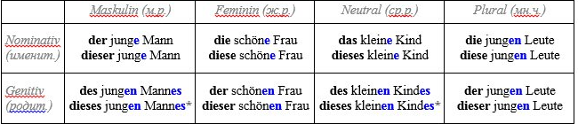
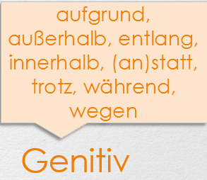

Genitiv — Родительный падеж в немецком языке
- Изучая немецкий язык каждый видит в таблицах четыре падежа (der Kasus) der Nominativ, der Genitiv, der
Dativ, der Akkusativ. И весь упор в работе с ними в основном приходится на два последних. О
родительном падеже (Genitiv) вспоминают как бы косвенно и вскользь. Это во многих случаях
обусловлено тем, что в разговорном немецком Genitiv в чистом виде применяется редко, а в некоторых
контекстах его можно обойти с помощью Dativ. Так как главный вопрос Genitiv — wessen? - чей, чья,
чьё?, то альтернативный Dativ имеет конструкцию с предлогом "von..." (от кого-л.), что несёт тот же
смысл.
- Автомобиль отца (чей?) — Das auto des Vaters (Genitiv)/Das Auto von dem Vater (Dativ)
- Шуба матери (чья?) — Der Pelzmantel der Mutter (Gen.)/Der Pelzmantel von der Mutter (Dat.)
- Ружьё ребёнка (чьё?) — Das Gewehr des Kindes (Gen.)/Das Gewehr von dem Kind (Dat.)
- Вещи друзей (чьи?) — Die Sachen der Freunde (Gen.)/Die Sachen von den Freunden (Dat.)
- Мы видим, что Genetiv в этих примерах указывает на принадлежность объектов. И здесь можно Genitiv
заменить на von + Dativ. Это же можно сделать и в случае, где указывается источник действия:
- die Arbeit der Lehrerin (работа учителя), Hilfe des älteren Bruders (помощь старшего брата)
- А как быть со свойством или качеством предмета?
- der Wagon zweiter Klasse (вагон второго класса), Speisen der besten Qualität (кухня высшего качества) —
- здесь легче употребить Genitiv, чем мучиться с Dativ
- Поскольку в немецком падежи выражаются при помощи артиклей, то необходимо помнить их формы в
- Родительном падеже (Genitiv)


- Используя Genitiv в немецком, нужно быть очень внимательным при образовании формы мужского и
среднего рода:они обычно приобретают окончания –s (-es)
- Используя Genitiv в немецком, нужно быть очень внимательным при образовании формы мужского и Geburtstag meines Vaters (день рождения моего отца), das Handy ihres Freundes (мобильный телефон её друга), das Zimmer ihres Kindes (комната их ребёнка), die Puppe des Mädchens (кукла девочки).
- Окончание –es присоединяется к:
- — односложным сущ.: das Kind – des Kindes, das Bild – des Bildes, der Sohn – des Sohnes, der Tag – des Tages
и т.д.
- — сущ., оканчивающимся на ss, — ß, — tz, — x и – z: der Bus- des Buses, der Fluss – des Flusses, der Arzt –
des Arztes, der Komplex – des Komplexes, der Platz – des Platzes. ВНИМАНИЕ! У сущ. с окончанием –nis
происходит удвоение s: das Ergebnis – des Ergebnisses, das Verständnis – des Verständnisses, das Zeugnis –
des Zeugnisses и т.д.
- — сущ. с ударением на последнем слоге: der Erfolg –des Erfolges и т.д.
- В остальных случаях применяется, как правило, окончание -s, но не стоит забывать о слабом склонении
существительных (n-Deklination) – существительные этого склонения приобретают окончание -en (как и во всех остальных пад.):
- der Mensch – des Menschen, der Russe – des Russen, der Hase – des Hasen и т.д.
- die Rede des Präsidenten – речь Президента (der President)
- das Spielzeug des Jungen – игрушка мальчика (der Junge)
- die Arbeit des Studenten – работа студента (der Student)
- das Auto des Polizisten – автомобиль полицейского (der Polizist)